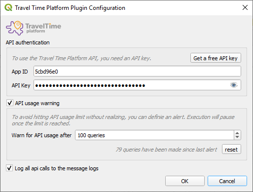

You need to get an API key to be able to use the Travel Time Platform. Getting an API key is free.
Once you have your key, open the settings panel . This will open the following dialog, where you can enter the key.

Be careful ! The API only supports up to 10 searches. This means that if your input layer contains more than 10 points, several queries will be made in batch. This may very quickly use your free API quota. So keep an eye on your usage from the settings dialog !